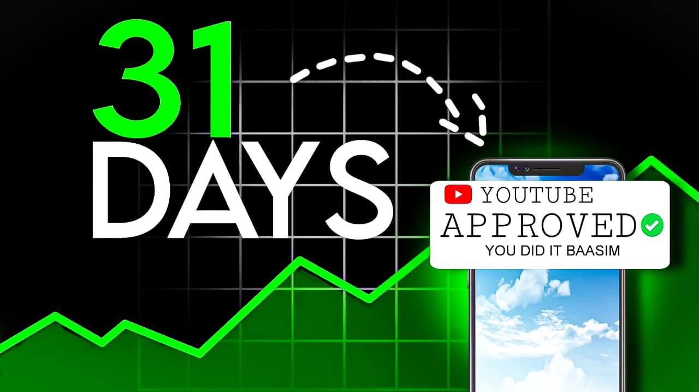

Thumbnail Design

31 DAYS — Growth Milestone
What it is
This thumbnail was created for a case study video tracking a YouTube channel's rapid growth over a 31-day period. It serves as a visual hook for viewers interested in analytics, strategy, and "challenge" style content.
Creative Strategy
The design process focused on three core psychological triggers: progress, validation, and urgency. I used a custom-drawn green growth line to lead the viewer's eye from the '31 DAYS' text directly to the phone mockup. High-saturation green was used for the accents to contrast against the dark background, ensuring the thumbnail stands out in a crowded feed.